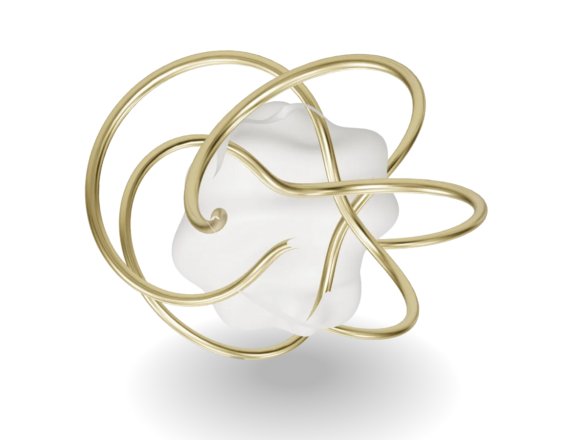

Open source · MIT · No framework required
Any 3D model.Web-ready in
mesh2web inspects, cleans, simplifies and compresses your models, then ships them in a lightweight <web-model> element built for scroll stories and GSAP.

Drag to rotate 219 KB · 52k tris
34.0 MB → 556 KB ✦
348k → 78k triangles ✦
2.9 s on slow 4G ✦
4 KB element shell ✦
The pipeline From raw export to shipped
01
Inspect
A health check flags 4K textures, missing normals, centimeter units, Z-up exports and dead data, each with a suggested fix.
02
Clean
Weld duplicate vertices, prune unused meshes and materials, join meshes that share a material, and generate smooth normals.
03
Simplify
meshoptimizer reduces triangles to the preset's budget while preserving silhouette and UV seams, then builds LODs.
04
Compress
Meshopt or Draco geometry, WebP textures capped per preset. A JSON + HTML report shows the before and after.
05
Ship
A poster, an embed snippet and a 4 KB element that lazy-loads three.js only when the model scrolls into view.
The <web-model> element
Declarative HTML for 90% of cases. A JS API for the rest.
A
Poster first
A poster fills the reserved box immediately, so LCP is unaffected and nothing shifts. The model fades in when it's ready.
B
Adaptive quality
Picks a LOD and pixel ratio from GPU, memory and screen, and steps down automatically if frame rate drops.
C
Zero idle cost
Renders on demand only. Pauses off-screen and in hidden tabs. three.js loads lazily as a separate chunk.
D
Page-first gestures
One finger scrolls the page, a horizontal swipe or two fingers rotate the model. Wheel zoom needs Ctrl/⌘.
E
Tuned lighting
Five presets with environment, tone mapping and a soft contact shadow, so models never look flat or grey.
F
Accessible
Uses role="img" and an ARIA label, rotates with the arrow keys, and honors prefers-reduced-motion. Falls back to the poster without WebGL.
Lighting presets
One attribute changes the mood.
studio-soft
studio-hard
outdoor
neon
flat
<web-model src="sculpture.glb" lighting="studio-soft ">
Usage
Three steps. No build step required.
1 · Optimize
2 · Embed
3 · Animate
# Health check: counts, textures, issues and fixes
npx @mesh2web/cli inspect robot.glb
# Optimize with a preset: hero · product · ambient
npx @mesh2web/cli optimize robot.glb --preset hero --poster
# Batch + watch with mesh2web.config.json (exit code 2 if over budget)
npx @mesh2web/cli build --watch
<script type="module"
src="https://cdn.jsdelivr.net/npm/@mesh2web/element/dist/web-model.js"></script>
<web-model
src="/3d/robot.glb"
lod-src="/3d/robot.lod1.glb /3d/robot.lod2.glb"
poster="/3d/robot.webp"
alt="A floating robot mascot"
lighting="studio-soft"
autorotate
loading="lazy"
></web-model>
const model = document.querySelector('web-model');
gsap.timeline({
scrollTrigger: { trigger: '#story', start: 'top top', end: '+=2000', scrub: true, pin: true },
})
.to(model.camera, { azimuth: 180, distance: 4 })
.to(model.animation, { progress: 1 }, 0)
.to(model, { exposure: 1.4 }, 0.5);
Packages
Use the whole chain, or just the link you need.